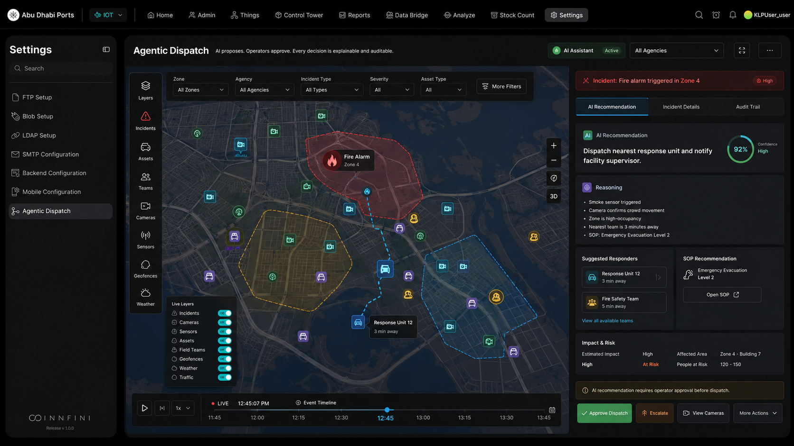

When an incident is detected, INNFINI analyzes the situation, assesses impact, recommends the right SOP, identifies the nearest available responders and proposes the next-best action — all in seconds, with cited reasoning. The operator stays in control. Nothing dispatches without approval (unless a rule explicitly authorizes auto-action).
<3s
Detect → recommend
100%
Explainable + audited
Human
In the loop
DetectRecommendApproveAct
agentic-dispatch · live · awaiting approvalAwaiting
The operator opens the incident, sees the live map context on the left, and an end-to-end recommendation panel on the right — reasoning, confidence, suggested responders, SOP checklist and action buttons.
incident-response · INC-2025-0007 · zone-4 fire alarmAI · awaiting approval
Camera feeds · Zone 4
3 live
CAM-4-12· haze detected · vision 0.91Confirming
CAM-4-08· crowd egress · Gate 3Watch
CAM-4-15· corridor clearClear
Unit status
4 tracked
Engine-12· en route · 3 minAssigned
Patrol-22· standby · 2 minAvailable
Medic-04· on call · 6 minHeld
SUP-04· on site · Level 2Notified
Incident timeline
T+00:41
14:36:01Smoke sensor SMK-4-08 triggered
14:36:04Camera CAM-4-12 confirmed haze · 0.91
14:36:08Incident opened · severity High
14:36:19SOP EVAC-2 matched · 7 steps
14:36:42Awaiting operator approval
INC-2025-0007High
Fire alarm triggered in Zone 4
Khalifa Mall · Level 2 · Retail wing · 14:36
AI · recommended action
Dispatch Engine-12 to Zone 4. Notify facility supervisor SUP-04. Activate evacuation SOP-EVAC-2 on PA, digital signage and mobile alert. Hold escalation pending operator approval.
Confidence0.94 · HIGH
Reasoning · cited
Smoke sensor SMK-4-08 triggered at 14:36:01 · Zone 4 retail floor.
Camera CAM-4-12 confirms crowd movement & haze · vision score 0.91.
Zone 4 high-occupancy · estimated 340 people on floor.
Nearest available response unit Engine-12 · 3 min ETA.
Abu Dhabi Ports · Agentic Dispatch · production viewAI · Active

Live production deployment · Abu Dhabi Ports. The Agentic Dispatch console showing a real Fire Alarm · Zone 4 incident: the AI Assistant pill at the top (Active), the incident banner (High severity), AI Recommendation tab with 92% confidence ("Dispatch nearest response unit and notify facility supervisor"), full reasoning list (smoke sensor triggered, camera confirms crowd movement, zone high-occupancy, nearest team 3 minutes away, SOP EVAC-2), suggested responders (Response Unit 12 · 3 min, Fire Safety Team · 5 min), SOP Recommendation panel, Impact & Risk metrics (Estimated Impact High · Affected Area Zone 4 - Building 7 · People at Risk 120-150), and the action buttons — Approve Dispatch (primary) / Escalate / View Cameras / More Actions. The banner at the bottom states "AI recommendation requires operator approval before dispatch" — the platform's core human-in-the-loop guarantee.
// The agentic-dispatch loop
Five stages. Always closed.
01 · Detect
Surface the event
Smoke, camera, RFID, sensor or operator report — every channel routes into the incident graph in real time.
02 · Recommend
AI proposes
Severity, SOP, responders, ETA, escalation path, similar past incidents — generated with citations and confidence.
03 · Approve
Human gate
The operator stays in control. Approve, escalate, modify or override — every decision recorded with identity + time.
04 · Act
Execute
Dispatch, alert, broadcast, lock-down, notify — through the integration layer. Outcomes streamed back to the canvas.
05 · Learn
Improve
Outcome feeds the model. Next time the same pattern arrives, recommendation quality and confidence improve.
// What the AI recommends
Ten signals. One recommendation.
Every recommendation is a fusion of operational signals — not a black-box "best guess".
01
Incident priority
Severity ranked by sensor data, occupancy, asset value, SLA pressure and historical impact.
02
Team assignment
Nearest available crew with the right skill, equipment and certification — plus an ETA.
03
Escalation path
If unresolved in X minutes, escalate to Y — multi-level paths defined per SOP.
04
SOP checklist
The right SOP attached, with required steps prefilled and trackable in-line.
05
Nearby resources
Cameras, vehicles, suppression systems, first-aid stations and exits within the incident radius.
06
Required approvals
Threshold-gated approvals — by cost, severity, role or zone — surfaced inline.
07
Comms actions
PA, SMS, push, signage, mobile alert — scripted per SOP, ready to launch with one approve.
08
Estimated impact
People affected, asset risk, downtime, financial exposure — quantified up front.
09
SLA risk
Probability of SLA breach with current resourcing — and what to change to recover.
10
Similar past incidents
Two or three precedents with their actions, outcomes and time-to-resolve — for fast pattern-match.
// Governance · operator-in-the-loop
AI proposes. The operator approves.
INNFINI is AI-assisted, not AI-autonomous. Approval modes are configurable per SOP, per role, per severity — from full auto-execute on low-risk routine actions, to mandatory dual-control approval on high-stakes ones.
Auto
Routine, low-risk
Pre-approved actions like camera cycling, log queries.
Attended
One-click approve
Operator must approve, but recommendation is presented inline.
Supervised
Dual-control
Operator + supervisor approval required before action executes.
Blocked
Human-only
Some actions never automate — AI advises, humans always execute.
// Why agentic dispatch matters
From paging-on-a-glance to coordinated response.
01 · Faster
−68% Time to Dispatch
From detection to crew rolling — measured across deployed sites.
02 · Smarter
Right SOP, First Time
SOP attached automatically — no manual lookup, no missed steps.
03 · Safer
Human Gate Always
Every dispatch is approved. Every approval is logged with identity + reason.
04 · Auditable
Cited Reasoning
Every recommendation explains itself — sensor IDs, camera frames, past cases.
Agentic Dispatch is the AI-assisted, human-governed response loop at the heart of INNFINI Command & Control. The platform proposes. The operator decides. The decision is explained. The outcome is learned.
See agentic dispatch on your operation.
A live walkthrough with our solutions team — your SOPs, your responders, your approval thresholds.